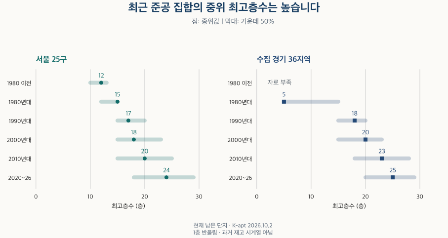
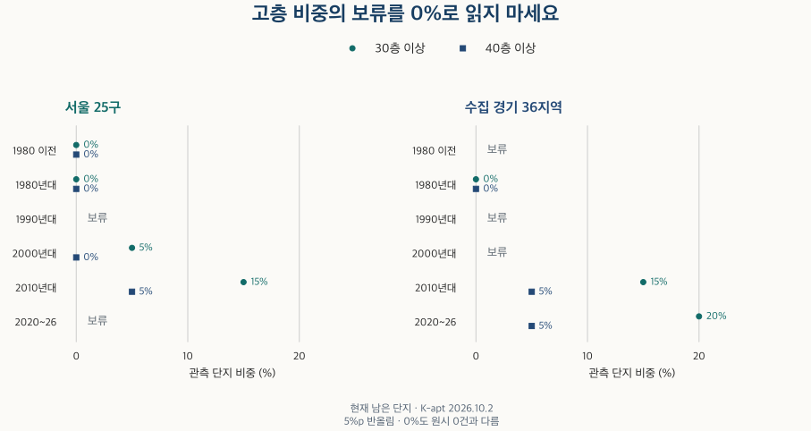

아파트의 진화 · 최고층수
아파트 최고층수, 신축일수록 높을까? 준공 연대별 서울·경기 비교
서울·수집 경기의 준공 연대별 최고층수와 30층·40층 이상 비중을 비교합니다. K-apt·건축물대장의 차이, 정보 누락과 현재 재고 비교의 한계를 함께 확인합니다.
분석 기간 · 준공 연대별 현재 단지 · 서울 25구·수집 경기 36개 지역 | 자료 기준일 · 2026-10-02
구축 아파트는 낮고 신축은 높다는 인상이 있습니다. 지금 남아 있는 서울·수집 경기 단지의 정보를 준공 연대로 나누면, 최근 준공 집합의 중위 최고층수가 더 높습니다. 하지만 단지의 가장 높은 층을 비교한 결과입니다. 모든 동이 그 높이라는 뜻도, 지금 보고 있는 집의 조망이 더 좋다는 뜻도 아닙니다.
‘최고 30층’이면 단지 안의 아파트가 모두 30층인가요?
아닙니다. 가령 가상의 단지에 15층·20층·30층 동이 하나씩 있다면 최고층은 30층이지만, 세 동의 가운데 값은 20층입니다. 이 글은 각 단지의 최고층수를 하나씩 놓고 단지끼리 비교합니다. 개별 동의 평균 높이나 세대별 거주층 분포를 계산하지 않았습니다.
| 항목 | 이 글에서 읽는 값 | 구분해야 할 것 |
|---|---|---|
| K-apt 최고층수 | 단지 기본정보 파일의 ‘최고층수’ | 주 비교값. 내가 보는 동·호수의 층이 아님 |
| K-apt 대장상 최고층수 | 같은 파일의 ‘최고층수(건축물대장상)’ | 별도 열. 일반 최고층수의 빈칸을 대신 채우지 않음 |
| 표제부 기록 최고값 | 주소·시기·세대수 대조 조건을 통과한 주거용 주건축물 기록의 지상층수 최고값 | 별도로 수집한 기록. 모든 물리적 동을 확인했다는 보증은 아님 |
| 높이(m)·지하층수 | 건축물대장의 별도 항목 | 지상층수에 합치거나 같은 단위로 비교하지 않음 |
K-apt 원본의 두 최고층 항목을 각각 읽고, 국토교통부 건축HUB 표제부의 지상층수와도 대조했습니다. 같은 ‘대장’이라는 말이 있어도 갱신 시기와 집계 대상이 모두 같다고 가정하지 않습니다. 값이 다르다고 한쪽을 자동으로 오류로 바꾸지도 않습니다.
기본정보 시점은 2026년 10월 2일입니다. 범위는 서울 25구와 수집 경기 36개 지역이며, 경기 전체나 인천을 포함하지 않습니다. 아파트·주상복합과 아파트/주상복합으로 분류된 도시형 생활주택을 측정합니다. 연립 분류·유형 미상·정보 미연결 단지는 측정값을 보류하되 정보 가용률의 전체 단지 분모에 남겼습니다.
준공 연대가 최근일수록 최고층수는 얼마나 높나요?
서울의 중위값은 1980년대 약 15층에서 2010년대 약 20층, 2020~2026년 약 24층입니다. 수집 경기는 같은 구간에서 약 5층, 23층, 25층입니다. 현재 관측되는 준공 집합의 차이입니다. 같은 단지가 시간이 흐르면서 높아진 것도, 해당 시점의 전체 아파트 재고를 복원한 것도 아닙니다.

| 지역·준공 연대 | 중위값 | 가운데 50% 구간 | 단지 정보 가용률 |
|---|---|---|---|
| 서울 · 1980년 이전 | 12층 | 10–13층 | 10–20% |
| 서울 · 1980년대 | 15층 | 12–15층 | 50–60% |
| 서울 · 1990년대 | 17층 | 15–20층 | 40–50% |
| 서울 · 2000년대 | 18층 | 15–23층 | 20–30% |
| 서울 · 2010년대 | 20층 | 15–25층 | 30–40% |
| 서울 · 2020~2026년 | 24층 | 18–29층 | 30–40% |
| 서울 · 준공연도 미상 | 자료 부족 | 자료 부족 | 자료 부족 |
| 수집 경기 · 1980년 이전 | 자료 부족 | 자료 부족 | 자료 부족 |
| 수집 경기 · 1980년대 | 5층 | 5–15층 | 10–20% |
| 수집 경기 · 1990년대 | 18층 | 15–20층 | 50–60% |
| 수집 경기 · 2000년대 | 20층 | 15–23층 | 50–60% |
| 수집 경기 · 2010년대 | 23층 | 18–28층 | 60–70% |
| 수집 경기 · 2020~2026년 | 25층 | 20–29층 | 50–60% |
| 수집 경기 · 준공연도 미상 | 자료 부족 | 자료 부족 | 자료 부족 |
중위 하나보다 분포를 함께 보세요. 2020~2026년 서울은 가운데 50%가 약 18~29층, 수집 경기는 약 20~29층입니다. 중위가 높은 집합 안에서도 단지마다 조건이 다릅니다. 반대로 1980년대 수집 경기는 중위 약 5층이지만 가운데 50% 구간의 위쪽은 약 15층입니다. ‘이 연대는 모두 저층’이라는 식으로 읽을 수 없습니다.
표의 가용률은 그 지역·연대의 전체 단지 중 이 값을 계산할 수 있는 단지의 비중입니다. 하한 포함·상한 미만의 10%포인트 구간이며 90~100%만 100%를 포함합니다. 적어도 10단지가 있어야 분포를 제시합니다. 자료 부족은 높이가 0이라는 뜻이 아닙니다.
30층·40층 아파트는 어느 연대부터 등장했나요?
이 자료로 전국의 역사적 최초 등장 시점을 확정할 수는 없습니다. 지금 남아 있고 정보가 연결된 단지만 보며, 작은 초기 사례는 공개 비중에서 보류하기 때문입니다. 아래 표에서 처음 숫자가 나타나는 연대가 처음 고층 아파트가 지어진 연대는 아닙니다.
비교 가능한 구간의 비중은 볼 수 있습니다. 2010년대 준공 집합에서 최고층수가 30층 이상인 단지 비중은 서울·수집 경기 모두 약 15%, 40층 이상은 약 5%입니다. 수집 경기 2020~2026년 집합은 각각 약 20%와 5%입니다. 문턱은 이 글의 비교 기준이며 ‘초고층’의 법적 분류를 대신하지 않습니다.

| 지역·준공 연대 | 30층 이상 | 40층 이상 |
|---|---|---|
| 서울 · 1980년 이전 | 0% | 0% |
| 서울 · 1980년대 | 0% | 0% |
| 서울 · 1990년대 | 보류 | 보류 |
| 서울 · 2000년대 | 5% | 0% |
| 서울 · 2010년대 | 15% | 5% |
| 서울 · 2020~2026년 | 보류 | 보류 |
| 서울 · 준공연도 미상 | 보류 | 보류 |
| 수집 경기 · 1980년 이전 | 보류 | 보류 |
| 수집 경기 · 1980년대 | 0% | 0% |
| 수집 경기 · 1990년대 | 보류 | 보류 |
| 수집 경기 · 2000년대 | 보류 | 보류 |
| 수집 경기 · 2010년대 | 15% | 5% |
| 수집 경기 · 2020~2026년 | 20% | 5% |
| 수집 경기 · 준공연도 미상 | 보류 | 보류 |
분포 표에 중위값이 있는데 고층 비중은 보류될 수도 있습니다. 서울 2020~2026년 집합이 그렇습니다. 전체 관측 단지는 충분해도, 두 문턱을 함께 보여줄 때 생기는 30층 미만·30~39층·40층 이상 범주 중 작은 양수 범주가 있으면 비중을 보류합니다. 정확 건수와 초기 개별 사례를 노출하지 않기 위한 규칙입니다.
또한 비중은 5%포인트 단위 반올림입니다. 표시된 0%에도 작은 양수 비중이 포함될 수 있습니다. 따라서 0%를 ‘없었다’, 보류를 ‘자료가 틀렸다’라고 읽지 마세요. 광역·연대별 관측 차이를 보여주는 표와 역사적 최초를 찾는 조사는 다른 자료를 필요로 합니다.
K-apt 대신 건축물대장을 쓰면 결론도 바뀌나요?
원천별 중위와 가용률을 나란히 보면 차이의 이유를 더 잘 구분할 수 있습니다. 아래 표의 세 열은 각각 가용한 표본 전체를 사용하므로, 숫자가 달라지는 데에는 기록값의 차이와 포함 단지의 차이가 함께 작용합니다. 표제부 열의 작은 가용률을 K-apt보다 더 넓게 검증했다는 뜻으로 읽지 않습니다.
| 지역·준공 연대 | K-apt 최고층 중위 | K-apt 대장상 중위 | 표제부 기록 중위 | K-apt 가용률 | 대장상 가용률 | 표제부 가용률 |
|---|---|---|---|---|---|---|
| 서울 · 1980년 이전 | 12층 | 12층 | 12층 | 10–20% | 10–20% | 0–10% |
| 서울 · 1980년대 | 15층 | 15층 | 14층 | 50–60% | 50–60% | 30–40% |
| 서울 · 1990년대 | 17층 | 18층 | 16층 | 40–50% | 40–50% | 10–20% |
| 서울 · 2000년대 | 18층 | 18층 | 18층 | 20–30% | 20–30% | 10–20% |
| 서울 · 2010년대 | 20층 | 20층 | 20층 | 30–40% | 30–40% | 20–30% |
| 서울 · 2020~2026년 | 24층 | 24층 | 24층 | 30–40% | 30–40% | 20–30% |
| 서울 · 준공연도 미상 | 자료 부족 | 자료 부족 | 자료 부족 | 자료 부족 | 자료 부족 | 자료 부족 |
| 수집 경기 · 1980년 이전 | 자료 부족 | 자료 부족 | 자료 부족 | 자료 부족 | 자료 부족 | 자료 부족 |
| 수집 경기 · 1980년대 | 5층 | 5층 | 6층 | 10–20% | 10–20% | 0–10% |
| 수집 경기 · 1990년대 | 18층 | 18층 | 18층 | 50–60% | 50–60% | 10–20% |
| 수집 경기 · 2000년대 | 20층 | 20층 | 20층 | 50–60% | 50–60% | 40–50% |
| 수집 경기 · 2010년대 | 23층 | 23층 | 24층 | 60–70% | 60–70% | 50–60% |
| 수집 경기 · 2020~2026년 | 25층 | 25층 | 25층 | 50–60% | 50–60% | 50–60% |
| 수집 경기 · 준공연도 미상 | 자료 부족 | 자료 부족 | 자료 부족 | 자료 부족 | 자료 부족 | 자료 부족 |
그래서 같은 단지만 남긴 비교도 했습니다. 두 K-apt 열을 공통 표본에서 바꾸거나 K-apt와 표제부의 공통 표본에서 값을 바꾸었을 때, 비교 가능한 광역·연대의 중위 변화는 각각 1층 이내였습니다. 반면 표제부가 연결된 단지만 남겨 K-apt 값을 다시 계산하는 표본 선택의 영향은 서울에서 2층 이내였습니다. 출처 이름뿐 아니라 어떤 단지가 빠지는지가 작은 차이를 설명할 수 있습니다.
원천·공통 표본·연결 방식의 민감도 보기
| 지역·검토 | 비교 연대 수 | 중위 변화 상한 | 사분위 변화 상한 | 비중 비교 연대 수 | 비중 변화 상한 |
|---|---|---|---|---|---|
| 서울 · 두 K-apt 열 · 같은 표본의 값 교체 | 6 | 1층 | 1층 | 4 | 5%p |
| 서울 · 두 K-apt 열 공통 표본만 남기기 | 6 | 0층 | 0층 | 4 | 0%p |
| 서울 · K-apt·표제부 · 같은 표본의 값 교체 | 6 | 1층 | 1층 | 3 | 0%p |
| 서울 · 표제부 공통 표본만 남기기 | 6 | 2층 | 2층 | 3 | 5%p |
| 서울 · 세대수 충돌 없는 단지만 비교 | 6 | 1층 | 2층 | 3 | 5%p |
| 서울 · 기본 연결 방식만 사용 | 6 | 0층 | 0층 | 4 | 5%p |
| 서울 · 표제부 기록수와 K-apt 동수 일치 | 6 | 1층 | 1층 | 2 | 0%p |
| 수집 경기 · 두 K-apt 열 · 같은 표본의 값 교체 | 5 | 1층 | 1층 | 3 | 0%p |
| 수집 경기 · 두 K-apt 열 공통 표본만 남기기 | 5 | 0층 | 0층 | 3 | 0%p |
| 수집 경기 · K-apt·표제부 · 같은 표본의 값 교체 | 5 | 1층 | 1층 | 4 | 5%p |
| 수집 경기 · 표제부 공통 표본만 남기기 | 5 | 1층 | 1층 | 3 | 5%p |
| 수집 경기 · 세대수 충돌 없는 단지만 비교 | 5 | 1층 | 1층 | 3 | 5%p |
| 수집 경기 · 기본 연결 방식만 사용 | 5 | 0층 | 0층 | 3 | 5%p |
| 수집 경기 · 표제부 기록수와 K-apt 동수 일치 | 5 | 0층 | 0층 | 4 | 5%p |
변화 상한은 비교 가능한 연대 전체에서 가장 큰 차이를 올림한 값입니다. 모든 연대에서 그만큼 달라졌다는 뜻이 아닙니다. 중위·사분위는 1층, 고층 비중은 5%포인트 단위 상한이며, 비중은 양쪽 공개 조건을 모두 통과한 연대만 비교합니다.
표제부는 주거용 주건축물만 쓰고, 정확한 필지가 한 단지에만 귀속되는지, 승인 시기와 세대수 합이 맞는지, 수집이 잘렸다는 신호가 없는지를 확인했습니다. 그래도 여러 타워가 하나의 대장에 등록될 수 있고 부속 필지 등이 빠질 수 있습니다. 따라서 이 보조값을 ‘단지의 모든 동을 완전히 확인한 최고층’이라고 부르지 않습니다.
오래된 저층 단지가 철거되거나 빠져서 생긴 차이는 아닐까요?
그럴 수 있으며, 이 비교의 가장 큰 한계입니다. 이미 사라진 단지는 현재 재고에서 볼 수 없습니다. 정보가 연결되지 않는 단지도 관측 분포에 들어오지 않습니다. 오래된 저층 단지가 더 많이 철거되었는지, 작은 단지가 더 많이 빠졌는지에 따라 지금 남은 연대별 모습이 달라질 수 있습니다.
가용률도 일정하지 않습니다. 서울 1980년대 준공 집합은 약 50~60% 구간이지만 2000년대는 약 20~30% 구간입니다. 수집 경기 1980년대는 약 10~20% 구간입니다. 현재 관측값의 차이를 당시 건축 관행 전체의 차이나 특정 정책의 효과로 확대할 수 없습니다. 가용률이 높아도 누락이 무작위였다는 뜻은 아닙니다.
공통 표본과 연결 방식 검토는 관측 가능한 자료 안에서 계산 선택의 영향을 보여줄 뿐입니다. 철거된 단지나 미연결 단지를 복구하지는 못합니다. ‘최근 집합의 중위 최고층수가 높다’는 결과는 참고할 수 있지만, 모든 신축이 모든 구축보다 높다고 일반화하지 마세요.
같은 준공 연대의 지역끼리는 어떻게 비교하나요?
서울·경기 전체 숫자를 원하는 동네에 그대로 적용하지 말고 아래에서 같은 준공 연대의 지역을 찾아보세요. 층수 중위와 가운데 50%, 정보 가용률을 함께 비교합니다. 최고층수 비중이 보류되어도 중위값과 분포를 확인할 수 있는 경우가 있으며, 작은 지역의 자료 부족을 지역의 주택 특성으로 단정하지 않습니다.
1980년 이전 · 61개 지역 비교
| 지역 | 중위값 | 가운데 50% | 30층 이상 | 40층 이상 | 단지 가용률 |
|---|---|---|---|---|---|
| 서울 종로구 | 자료 부족 | 자료 부족 | 보류 | 보류 | 자료 부족 |
| 서울 중구 | 자료 부족 | 자료 부족 | 보류 | 보류 | 자료 부족 |
| 서울 용산구 | 자료 부족 | 자료 부족 | 보류 | 보류 | 자료 부족 |
| 서울 성동구 | 자료 부족 | 자료 부족 | 보류 | 보류 | 자료 부족 |
| 서울 광진구 | 자료 부족 | 자료 부족 | 보류 | 보류 | 자료 부족 |
| 서울 동대문구 | 자료 부족 | 자료 부족 | 보류 | 보류 | 자료 부족 |
| 서울 중랑구 | 자료 부족 | 자료 부족 | 보류 | 보류 | 자료 부족 |
| 서울 성북구 | 자료 부족 | 자료 부족 | 보류 | 보류 | 자료 부족 |
| 서울 강북구 | 자료 부족 | 자료 부족 | 보류 | 보류 | 자료 부족 |
| 서울 도봉구 | 자료 부족 | 자료 부족 | 보류 | 보류 | 자료 부족 |
| 서울 노원구 | 자료 부족 | 자료 부족 | 보류 | 보류 | 자료 부족 |
| 서울 은평구 | 자료 부족 | 자료 부족 | 보류 | 보류 | 자료 부족 |
| 서울 서대문구 | 자료 부족 | 자료 부족 | 보류 | 보류 | 자료 부족 |
| 서울 마포구 | 자료 부족 | 자료 부족 | 보류 | 보류 | 자료 부족 |
| 서울 양천구 | 자료 부족 | 자료 부족 | 보류 | 보류 | 자료 부족 |
| 서울 강서구 | 자료 부족 | 자료 부족 | 보류 | 보류 | 자료 부족 |
| 서울 구로구 | 자료 부족 | 자료 부족 | 보류 | 보류 | 자료 부족 |
| 서울 금천구 | 자료 부족 | 자료 부족 | 보류 | 보류 | 자료 부족 |
| 서울 영등포구 | 12층 | 12–13층 | 0% | 0% | 70–80% |
| 서울 동작구 | 자료 부족 | 자료 부족 | 보류 | 보류 | 자료 부족 |
| 서울 관악구 | 자료 부족 | 자료 부족 | 보류 | 보류 | 자료 부족 |
| 서울 서초구 | 자료 부족 | 자료 부족 | 보류 | 보류 | 자료 부족 |
| 서울 강남구 | 자료 부족 | 자료 부족 | 보류 | 보류 | 자료 부족 |
| 서울 송파구 | 자료 부족 | 자료 부족 | 보류 | 보류 | 자료 부족 |
| 서울 강동구 | 자료 부족 | 자료 부족 | 보류 | 보류 | 자료 부족 |
| 경기 수원시 장안구 | 자료 부족 | 자료 부족 | 보류 | 보류 | 자료 부족 |
| 경기 수원시 권선구 | 자료 부족 | 자료 부족 | 보류 | 보류 | 자료 부족 |
| 경기 수원시 팔달구 | 자료 부족 | 자료 부족 | 보류 | 보류 | 자료 부족 |
| 경기 수원시 영통구 | 자료 부족 | 자료 부족 | 보류 | 보류 | 자료 부족 |
| 경기 성남시 수정구 | 자료 부족 | 자료 부족 | 보류 | 보류 | 자료 부족 |
| 경기 성남시 중원구 | 자료 부족 | 자료 부족 | 보류 | 보류 | 자료 부족 |
| 경기 성남시 분당구 | 자료 부족 | 자료 부족 | 보류 | 보류 | 자료 부족 |
| 경기 의정부시 | 자료 부족 | 자료 부족 | 보류 | 보류 | 자료 부족 |
| 경기 안양시 만안구 | 자료 부족 | 자료 부족 | 보류 | 보류 | 자료 부족 |
| 경기 안양시 동안구 | 자료 부족 | 자료 부족 | 보류 | 보류 | 자료 부족 |
| 경기 부천시 원미구 | 자료 부족 | 자료 부족 | 보류 | 보류 | 자료 부족 |
| 경기 부천시 소사구 | 자료 부족 | 자료 부족 | 보류 | 보류 | 자료 부족 |
| 경기 부천시 오정구 | 자료 부족 | 자료 부족 | 보류 | 보류 | 자료 부족 |
| 경기 광명시 | 자료 부족 | 자료 부족 | 보류 | 보류 | 자료 부족 |
| 경기 평택시 | 자료 부족 | 자료 부족 | 보류 | 보류 | 자료 부족 |
| 경기 안산시 상록구 | 자료 부족 | 자료 부족 | 보류 | 보류 | 자료 부족 |
| 경기 안산시 단원구 | 자료 부족 | 자료 부족 | 보류 | 보류 | 자료 부족 |
| 경기 고양시 덕양구 | 자료 부족 | 자료 부족 | 보류 | 보류 | 자료 부족 |
| 경기 고양시 일산동구 | 자료 부족 | 자료 부족 | 보류 | 보류 | 자료 부족 |
| 경기 고양시 일산서구 | 자료 부족 | 자료 부족 | 보류 | 보류 | 자료 부족 |
| 경기 과천시 | 자료 부족 | 자료 부족 | 보류 | 보류 | 자료 부족 |
| 경기 구리시 | 자료 부족 | 자료 부족 | 보류 | 보류 | 자료 부족 |
| 경기 남양주시 | 자료 부족 | 자료 부족 | 보류 | 보류 | 자료 부족 |
| 경기 군포시 | 자료 부족 | 자료 부족 | 보류 | 보류 | 자료 부족 |
| 경기 의왕시 | 자료 부족 | 자료 부족 | 보류 | 보류 | 자료 부족 |
| 경기 하남시 | 자료 부족 | 자료 부족 | 보류 | 보류 | 자료 부족 |
| 경기 용인시 처인구 | 자료 부족 | 자료 부족 | 보류 | 보류 | 자료 부족 |
| 경기 용인시 기흥구 | 자료 부족 | 자료 부족 | 보류 | 보류 | 자료 부족 |
| 경기 용인시 수지구 | 자료 부족 | 자료 부족 | 보류 | 보류 | 자료 부족 |
| 경기 파주시 | 자료 부족 | 자료 부족 | 보류 | 보류 | 자료 부족 |
| 경기 김포시 | 자료 부족 | 자료 부족 | 보류 | 보류 | 자료 부족 |
| 경기 화성시 만세구 | 자료 부족 | 자료 부족 | 보류 | 보류 | 자료 부족 |
| 경기 화성시 효행구 | 자료 부족 | 자료 부족 | 보류 | 보류 | 자료 부족 |
| 경기 화성시 병점구 | 자료 부족 | 자료 부족 | 보류 | 보류 | 자료 부족 |
| 경기 화성시 동탄구 | 자료 부족 | 자료 부족 | 보류 | 보류 | 자료 부족 |
| 경기 광주시 | 자료 부족 | 자료 부족 | 보류 | 보류 | 자료 부족 |
1980년대 · 61개 지역 비교
| 지역 | 중위값 | 가운데 50% | 30층 이상 | 40층 이상 | 단지 가용률 |
|---|---|---|---|---|---|
| 서울 종로구 | 자료 부족 | 자료 부족 | 보류 | 보류 | 자료 부족 |
| 서울 중구 | 자료 부족 | 자료 부족 | 보류 | 보류 | 자료 부족 |
| 서울 용산구 | 자료 부족 | 자료 부족 | 보류 | 보류 | 자료 부족 |
| 서울 성동구 | 자료 부족 | 자료 부족 | 보류 | 보류 | 자료 부족 |
| 서울 광진구 | 자료 부족 | 자료 부족 | 보류 | 보류 | 자료 부족 |
| 서울 동대문구 | 자료 부족 | 자료 부족 | 보류 | 보류 | 자료 부족 |
| 서울 중랑구 | 자료 부족 | 자료 부족 | 보류 | 보류 | 자료 부족 |
| 서울 성북구 | 자료 부족 | 자료 부족 | 보류 | 보류 | 자료 부족 |
| 서울 강북구 | 자료 부족 | 자료 부족 | 보류 | 보류 | 자료 부족 |
| 서울 도봉구 | 15층 | 14–15층 | 0% | 0% | 70–80% |
| 서울 노원구 | 15층 | 15–15층 | 0% | 0% | 40–50% |
| 서울 은평구 | 자료 부족 | 자료 부족 | 보류 | 보류 | 자료 부족 |
| 서울 서대문구 | 자료 부족 | 자료 부족 | 보류 | 보류 | 자료 부족 |
| 서울 마포구 | 자료 부족 | 자료 부족 | 보류 | 보류 | 자료 부족 |
| 서울 양천구 | 15층 | 14–15층 | 0% | 0% | 80–90% |
| 서울 강서구 | 자료 부족 | 자료 부족 | 보류 | 보류 | 자료 부족 |
| 서울 구로구 | 15층 | 11–15층 | 0% | 0% | 30–40% |
| 서울 금천구 | 자료 부족 | 자료 부족 | 보류 | 보류 | 자료 부족 |
| 서울 영등포구 | 15층 | 13–15층 | 0% | 0% | 70–80% |
| 서울 동작구 | 자료 부족 | 자료 부족 | 보류 | 보류 | 자료 부족 |
| 서울 관악구 | 자료 부족 | 자료 부족 | 보류 | 보류 | 자료 부족 |
| 서울 서초구 | 14층 | 11–15층 | 0% | 0% | 30–40% |
| 서울 강남구 | 14층 | 9–15층 | 0% | 0% | 30–40% |
| 서울 송파구 | 14층 | 12–15층 | 0% | 0% | 60–70% |
| 서울 강동구 | 15층 | 12–15층 | 0% | 0% | 40–50% |
| 경기 수원시 장안구 | 자료 부족 | 자료 부족 | 보류 | 보류 | 자료 부족 |
| 경기 수원시 권선구 | 자료 부족 | 자료 부족 | 보류 | 보류 | 자료 부족 |
| 경기 수원시 팔달구 | 자료 부족 | 자료 부족 | 보류 | 보류 | 자료 부족 |
| 경기 수원시 영통구 | 자료 부족 | 자료 부족 | 보류 | 보류 | 자료 부족 |
| 경기 성남시 수정구 | 자료 부족 | 자료 부족 | 보류 | 보류 | 자료 부족 |
| 경기 성남시 중원구 | 자료 부족 | 자료 부족 | 보류 | 보류 | 자료 부족 |
| 경기 성남시 분당구 | 자료 부족 | 자료 부족 | 보류 | 보류 | 자료 부족 |
| 경기 의정부시 | 자료 부족 | 자료 부족 | 보류 | 보류 | 자료 부족 |
| 경기 안양시 만안구 | 자료 부족 | 자료 부족 | 보류 | 보류 | 자료 부족 |
| 경기 안양시 동안구 | 자료 부족 | 자료 부족 | 보류 | 보류 | 자료 부족 |
| 경기 부천시 원미구 | 자료 부족 | 자료 부족 | 보류 | 보류 | 자료 부족 |
| 경기 부천시 소사구 | 10층 | 5–12층 | 0% | 0% | 10–20% |
| 경기 부천시 오정구 | 자료 부족 | 자료 부족 | 보류 | 보류 | 자료 부족 |
| 경기 광명시 | 자료 부족 | 자료 부족 | 보류 | 보류 | 자료 부족 |
| 경기 평택시 | 자료 부족 | 자료 부족 | 보류 | 보류 | 자료 부족 |
| 경기 안산시 상록구 | 자료 부족 | 자료 부족 | 보류 | 보류 | 자료 부족 |
| 경기 안산시 단원구 | 자료 부족 | 자료 부족 | 보류 | 보류 | 자료 부족 |
| 경기 고양시 덕양구 | 자료 부족 | 자료 부족 | 보류 | 보류 | 자료 부족 |
| 경기 고양시 일산동구 | 자료 부족 | 자료 부족 | 보류 | 보류 | 자료 부족 |
| 경기 고양시 일산서구 | 자료 부족 | 자료 부족 | 보류 | 보류 | 자료 부족 |
| 경기 과천시 | 자료 부족 | 자료 부족 | 보류 | 보류 | 자료 부족 |
| 경기 구리시 | 자료 부족 | 자료 부족 | 보류 | 보류 | 자료 부족 |
| 경기 남양주시 | 자료 부족 | 자료 부족 | 보류 | 보류 | 자료 부족 |
| 경기 군포시 | 자료 부족 | 자료 부족 | 보류 | 보류 | 자료 부족 |
| 경기 의왕시 | 자료 부족 | 자료 부족 | 보류 | 보류 | 자료 부족 |
| 경기 하남시 | 자료 부족 | 자료 부족 | 보류 | 보류 | 자료 부족 |
| 경기 용인시 처인구 | 자료 부족 | 자료 부족 | 보류 | 보류 | 자료 부족 |
| 경기 용인시 기흥구 | 자료 부족 | 자료 부족 | 보류 | 보류 | 자료 부족 |
| 경기 용인시 수지구 | 자료 부족 | 자료 부족 | 보류 | 보류 | 자료 부족 |
| 경기 파주시 | 자료 부족 | 자료 부족 | 보류 | 보류 | 자료 부족 |
| 경기 김포시 | 자료 부족 | 자료 부족 | 보류 | 보류 | 자료 부족 |
| 경기 화성시 만세구 | 자료 부족 | 자료 부족 | 보류 | 보류 | 자료 부족 |
| 경기 화성시 효행구 | 자료 부족 | 자료 부족 | 보류 | 보류 | 자료 부족 |
| 경기 화성시 병점구 | 자료 부족 | 자료 부족 | 보류 | 보류 | 자료 부족 |
| 경기 화성시 동탄구 | 자료 부족 | 자료 부족 | 보류 | 보류 | 자료 부족 |
| 경기 광주시 | 자료 부족 | 자료 부족 | 보류 | 보류 | 자료 부족 |
1990년대 · 61개 지역 비교
| 지역 | 중위값 | 가운데 50% | 30층 이상 | 40층 이상 | 단지 가용률 |
|---|---|---|---|---|---|
| 서울 종로구 | 자료 부족 | 자료 부족 | 보류 | 보류 | 자료 부족 |
| 서울 중구 | 자료 부족 | 자료 부족 | 보류 | 보류 | 자료 부족 |
| 서울 용산구 | 자료 부족 | 자료 부족 | 보류 | 보류 | 자료 부족 |
| 서울 성동구 | 18층 | 15–19층 | 0% | 0% | 60–70% |
| 서울 광진구 | 22층 | 20–24층 | 보류 | 보류 | 50–60% |
| 서울 동대문구 | 18층 | 15–22층 | 0% | 0% | 50–60% |
| 서울 중랑구 | 20층 | 15–22층 | 0% | 0% | 50–60% |
| 서울 성북구 | 18층 | 18–20층 | 0% | 0% | 60–70% |
| 서울 강북구 | 15층 | 15–18층 | 0% | 0% | 40–50% |
| 서울 도봉구 | 15층 | 15–17층 | 0% | 0% | 70–80% |
| 서울 노원구 | 15층 | 15–19층 | 0% | 0% | 80–90% |
| 서울 은평구 | 16층 | 15–19층 | 0% | 0% | 40–50% |
| 서울 서대문구 | 18층 | 15–18층 | 0% | 0% | 60–70% |
| 서울 마포구 | 19층 | 15–22층 | 0% | 0% | 40–50% |
| 서울 양천구 | 18층 | 15–19층 | 0% | 0% | 20–30% |
| 서울 강서구 | 15층 | 15–17층 | 0% | 0% | 60–70% |
| 서울 구로구 | 20층 | 17–24층 | 0% | 0% | 10–20% |
| 서울 금천구 | 19층 | 15–22층 | 0% | 0% | 50–60% |
| 서울 영등포구 | 20층 | 18–22층 | 보류 | 보류 | 90–100% |
| 서울 동작구 | 18층 | 15–21층 | 보류 | 보류 | 50–60% |
| 서울 관악구 | 17층 | 15–19층 | 0% | 0% | 50–60% |
| 서울 서초구 | 16층 | 15–18층 | 0% | 0% | 20–30% |
| 서울 강남구 | 15층 | 14–19층 | 보류 | 보류 | 30–40% |
| 서울 송파구 | 15층 | 13–20층 | 0% | 0% | 30–40% |
| 서울 강동구 | 19층 | 17–21층 | 0% | 0% | 30–40% |
| 경기 수원시 장안구 | 18층 | 15–20층 | 0% | 0% | 50–60% |
| 경기 수원시 권선구 | 14층 | 12–18층 | 0% | 0% | 80–90% |
| 경기 수원시 팔달구 | 17층 | 15–20층 | 0% | 0% | 40–50% |
| 경기 수원시 영통구 | 20층 | 10–20층 | 0% | 0% | 40–50% |
| 경기 성남시 수정구 | 자료 부족 | 자료 부족 | 보류 | 보류 | 자료 부족 |
| 경기 성남시 중원구 | 15층 | 12–15층 | 0% | 0% | 70–80% |
| 경기 성남시 분당구 | 22층 | 19–25층 | 보류 | 보류 | 50–60% |
| 경기 의정부시 | 20층 | 17–23층 | 0% | 0% | 70–80% |
| 경기 안양시 만안구 | 20층 | 15–23층 | 0% | 0% | 70–80% |
| 경기 안양시 동안구 | 20층 | 18–24층 | 0% | 0% | 60–70% |
| 경기 부천시 원미구 | 23층 | 20–25층 | 0% | 0% | 40–50% |
| 경기 부천시 소사구 | 15층 | 11–18층 | 0% | 0% | 60–70% |
| 경기 부천시 오정구 | 자료 부족 | 자료 부족 | 보류 | 보류 | 자료 부족 |
| 경기 광명시 | 15층 | 15–19층 | 0% | 0% | 70–80% |
| 경기 평택시 | 15층 | 11–16층 | 0% | 0% | 70–80% |
| 경기 안산시 상록구 | 19층 | 15–22층 | 0% | 0% | 80–90% |
| 경기 안산시 단원구 | 자료 부족 | 자료 부족 | 보류 | 보류 | 자료 부족 |
| 경기 고양시 덕양구 | 16층 | 15–20층 | 0% | 0% | 50–60% |
| 경기 고양시 일산동구 | 19층 | 12–23층 | 0% | 0% | 40–50% |
| 경기 고양시 일산서구 | 19층 | 17–20층 | 0% | 0% | 60–70% |
| 경기 과천시 | 자료 부족 | 자료 부족 | 보류 | 보류 | 자료 부족 |
| 경기 구리시 | 20층 | 18–22층 | 0% | 0% | 20–30% |
| 경기 남양주시 | 20층 | 15–20층 | 0% | 0% | 50–60% |
| 경기 군포시 | 24층 | 18–25층 | 0% | 0% | 70–80% |
| 경기 의왕시 | 18층 | 17–20층 | 0% | 0% | 60–70% |
| 경기 하남시 | 20층 | 18–21층 | 0% | 0% | 80–90% |
| 경기 용인시 처인구 | 19층 | 18–20층 | 0% | 0% | 10–20% |
| 경기 용인시 기흥구 | 18층 | 15–20층 | 0% | 0% | 50–60% |
| 경기 용인시 수지구 | 18층 | 17–20층 | 0% | 0% | 50–60% |
| 경기 파주시 | 15층 | 13–19층 | 0% | 0% | 50–60% |
| 경기 김포시 | 15층 | 15–19층 | 0% | 0% | 60–70% |
| 경기 화성시 만세구 | 자료 부족 | 자료 부족 | 보류 | 보류 | 자료 부족 |
| 경기 화성시 효행구 | 자료 부족 | 자료 부족 | 보류 | 보류 | 자료 부족 |
| 경기 화성시 병점구 | 자료 부족 | 자료 부족 | 보류 | 보류 | 자료 부족 |
| 경기 화성시 동탄구 | 자료 부족 | 자료 부족 | 보류 | 보류 | 자료 부족 |
| 경기 광주시 | 20층 | 19–22층 | 0% | 0% | 90–100% |
2000년대 · 61개 지역 비교
| 지역 | 중위값 | 가운데 50% | 30층 이상 | 40층 이상 | 단지 가용률 |
|---|---|---|---|---|---|
| 서울 종로구 | 14층 | 3–19층 | 보류 | 보류 | 20–30% |
| 서울 중구 | 자료 부족 | 자료 부족 | 보류 | 보류 | 자료 부족 |
| 서울 용산구 | 20층 | 15–31층 | 보류 | 보류 | 20–30% |
| 서울 성동구 | 19층 | 15–24층 | 0% | 0% | 40–50% |
| 서울 광진구 | 22층 | 19–25층 | 보류 | 보류 | 10–20% |
| 서울 동대문구 | 22층 | 19–24층 | 보류 | 보류 | 20–30% |
| 서울 중랑구 | 18층 | 15–22층 | 0% | 0% | 20–30% |
| 서울 성북구 | 20층 | 18–20층 | 0% | 0% | 40–50% |
| 서울 강북구 | 19층 | 15–21층 | 0% | 0% | 20–30% |
| 서울 도봉구 | 18층 | 15–21층 | 0% | 0% | 30–40% |
| 서울 노원구 | 18층 | 15–20층 | 0% | 0% | 30–40% |
| 서울 은평구 | 15층 | 14–18층 | 0% | 0% | 10–20% |
| 서울 서대문구 | 18층 | 15–20층 | 0% | 0% | 10–20% |
| 서울 마포구 | 19층 | 15–22층 | 보류 | 보류 | 20–30% |
| 서울 양천구 | 15층 | 15–19층 | 보류 | 보류 | 10–20% |
| 서울 강서구 | 15층 | 15–16층 | 0% | 0% | 10–20% |
| 서울 구로구 | 22층 | 17–25층 | 보류 | 보류 | 20–30% |
| 서울 금천구 | 19층 | 15–22층 | 0% | 0% | 10–20% |
| 서울 영등포구 | 21층 | 17–25층 | 보류 | 보류 | 50–60% |
| 서울 동작구 | 18층 | 15–20층 | 보류 | 보류 | 30–40% |
| 서울 관악구 | 19층 | 15–23층 | 0% | 0% | 10–20% |
| 서울 서초구 | 18층 | 15–24층 | 보류 | 보류 | 10–20% |
| 서울 강남구 | 22층 | 16–25층 | 보류 | 보류 | 10–20% |
| 서울 송파구 | 19층 | 15–24층 | 보류 | 보류 | 10–20% |
| 서울 강동구 | 15층 | 14–22층 | 보류 | 보류 | 10–20% |
| 경기 수원시 장안구 | 23층 | 20–25층 | 보류 | 보류 | 60–70% |
| 경기 수원시 권선구 | 15층 | 15–16층 | 0% | 0% | 30–40% |
| 경기 수원시 팔달구 | 18층 | 15–25층 | 보류 | 보류 | 50–60% |
| 경기 수원시 영통구 | 20층 | 17–25층 | 보류 | 보류 | 80–90% |
| 경기 성남시 수정구 | 자료 부족 | 자료 부족 | 보류 | 보류 | 자료 부족 |
| 경기 성남시 중원구 | 15층 | 15–21층 | 0% | 0% | 10–20% |
| 경기 성남시 분당구 | 20층 | 18–25층 | 보류 | 보류 | 80–90% |
| 경기 의정부시 | 21층 | 20–23층 | 0% | 0% | 70–80% |
| 경기 안양시 만안구 | 20층 | 16–23층 | 보류 | 보류 | 40–50% |
| 경기 안양시 동안구 | 23층 | 21–25층 | 0% | 0% | 40–50% |
| 경기 부천시 원미구 | 22층 | 14–25층 | 보류 | 보류 | 30–40% |
| 경기 부천시 소사구 | 20층 | 15–25층 | 0% | 0% | 30–40% |
| 경기 부천시 오정구 | 자료 부족 | 자료 부족 | 보류 | 보류 | 자료 부족 |
| 경기 광명시 | 23층 | 17–26층 | 보류 | 보류 | 50–60% |
| 경기 평택시 | 17층 | 15–18층 | 보류 | 보류 | 70–80% |
| 경기 안산시 상록구 | 19층 | 15–24층 | 보류 | 보류 | 40–50% |
| 경기 안산시 단원구 | 15층 | 15–23층 | 보류 | 보류 | 80–90% |
| 경기 고양시 덕양구 | 22층 | 16–25층 | 0% | 0% | 40–50% |
| 경기 고양시 일산동구 | 20층 | 18–20층 | 0% | 0% | 90–100% |
| 경기 고양시 일산서구 | 20층 | 18–25층 | 0% | 0% | 80–90% |
| 경기 과천시 | 자료 부족 | 자료 부족 | 보류 | 보류 | 자료 부족 |
| 경기 구리시 | 22층 | 19–24층 | 0% | 0% | 30–40% |
| 경기 남양주시 | 19층 | 15–20층 | 0% | 0% | 70–80% |
| 경기 군포시 | 15층 | 15–22층 | 0% | 0% | 10–20% |
| 경기 의왕시 | 22층 | 20–23층 | 0% | 0% | 60–70% |
| 경기 하남시 | 23층 | 17–25층 | 0% | 0% | 70–80% |
| 경기 용인시 처인구 | 15층 | 15–18층 | 0% | 0% | 60–70% |
| 경기 용인시 기흥구 | 20층 | 18–22층 | 0% | 0% | 80–90% |
| 경기 용인시 수지구 | 20층 | 18–20층 | 0% | 0% | 70–80% |
| 경기 파주시 | 15층 | 15–20층 | 0% | 0% | 80–90% |
| 경기 김포시 | 17층 | 15–18층 | 0% | 0% | 80–90% |
| 경기 화성시 만세구 | 17층 | 15–20층 | 0% | 0% | 70–80% |
| 경기 화성시 효행구 | 18층 | 15–23층 | 0% | 0% | 70–80% |
| 경기 화성시 병점구 | 15층 | 15–18층 | 0% | 0% | 80–90% |
| 경기 화성시 동탄구 | 30층 | 27–31층 | 보류 | 보류 | 80–90% |
| 경기 광주시 | 15층 | 15–19층 | 0% | 0% | 80–90% |
2010년대 · 61개 지역 비교
| 지역 | 중위값 | 가운데 50% | 30층 이상 | 40층 이상 | 단지 가용률 |
|---|---|---|---|---|---|
| 서울 종로구 | 자료 부족 | 자료 부족 | 보류 | 보류 | 자료 부족 |
| 서울 중구 | 20층 | 15–26층 | 보류 | 보류 | 40–50% |
| 서울 용산구 | 25층 | 17–37층 | 보류 | 보류 | 50–60% |
| 서울 성동구 | 20층 | 20–31층 | 보류 | 보류 | 50–60% |
| 서울 광진구 | 자료 부족 | 자료 부족 | 보류 | 보류 | 자료 부족 |
| 서울 동대문구 | 20층 | 15–22층 | 보류 | 보류 | 20–30% |
| 서울 중랑구 | 17층 | 15–24층 | 보류 | 보류 | 30–40% |
| 서울 성북구 | 20층 | 15–24층 | 보류 | 보류 | 70–80% |
| 서울 강북구 | 자료 부족 | 자료 부족 | 보류 | 보류 | 자료 부족 |
| 서울 도봉구 | 자료 부족 | 자료 부족 | 보류 | 보류 | 자료 부족 |
| 서울 노원구 | 자료 부족 | 자료 부족 | 보류 | 보류 | 자료 부족 |
| 서울 은평구 | 15층 | 15–19층 | 보류 | 보류 | 10–20% |
| 서울 서대문구 | 19층 | 14–21층 | 보류 | 보류 | 20–30% |
| 서울 마포구 | 21층 | 18–27층 | 보류 | 보류 | 40–50% |
| 서울 양천구 | 15층 | 13–20층 | 보류 | 보류 | 30–40% |
| 서울 강서구 | 16층 | 15–18층 | 0% | 0% | 10–20% |
| 서울 구로구 | 18층 | 13–20층 | 보류 | 보류 | 30–40% |
| 서울 금천구 | 자료 부족 | 자료 부족 | 보류 | 보류 | 자료 부족 |
| 서울 영등포구 | 20층 | 16–21층 | 보류 | 보류 | 30–40% |
| 서울 동작구 | 20층 | 18–25층 | 0% | 0% | 60–70% |
| 서울 관악구 | 자료 부족 | 자료 부족 | 보류 | 보류 | 자료 부족 |
| 서울 서초구 | 25층 | 17–32층 | 35% | 0% | 40–50% |
| 서울 강남구 | 15층 | 14–25층 | 보류 | 보류 | 30–40% |
| 서울 송파구 | 23층 | 20–28층 | 보류 | 보류 | 40–50% |
| 서울 강동구 | 25층 | 19–34층 | 보류 | 보류 | 20–30% |
| 경기 수원시 장안구 | 자료 부족 | 자료 부족 | 보류 | 보류 | 자료 부족 |
| 경기 수원시 권선구 | 20층 | 15–25층 | 보류 | 보류 | 80–90% |
| 경기 수원시 팔달구 | 16층 | 12–23층 | 보류 | 보류 | 40–50% |
| 경기 수원시 영통구 | 27층 | 23–33층 | 보류 | 보류 | 80–90% |
| 경기 성남시 수정구 | 15층 | 14–20층 | 0% | 0% | 50–60% |
| 경기 성남시 중원구 | 자료 부족 | 자료 부족 | 보류 | 보류 | 자료 부족 |
| 경기 성남시 분당구 | 자료 부족 | 자료 부족 | 보류 | 보류 | 자료 부족 |
| 경기 의정부시 | 20층 | 19–26층 | 보류 | 보류 | 50–60% |
| 경기 안양시 만안구 | 자료 부족 | 자료 부족 | 보류 | 보류 | 자료 부족 |
| 경기 안양시 동안구 | 23층 | 19–28층 | 보류 | 보류 | 30–40% |
| 경기 부천시 원미구 | 25층 | 17–28층 | 보류 | 보류 | 10–20% |
| 경기 부천시 소사구 | 28층 | 19–29층 | 보류 | 보류 | 20–30% |
| 경기 부천시 오정구 | 자료 부족 | 자료 부족 | 보류 | 보류 | 자료 부족 |
| 경기 광명시 | 26층 | 17–39층 | 보류 | 보류 | 60–70% |
| 경기 평택시 | 20층 | 16–25층 | 보류 | 보류 | 60–70% |
| 경기 안산시 상록구 | 자료 부족 | 자료 부족 | 보류 | 보류 | 자료 부족 |
| 경기 안산시 단원구 | 33층 | 26–37층 | 보류 | 보류 | 60–70% |
| 경기 고양시 덕양구 | 25층 | 22–29층 | 보류 | 보류 | 80–90% |
| 경기 고양시 일산동구 | 30층 | 29–45층 | 보류 | 보류 | 90–100% |
| 경기 고양시 일산서구 | 29층 | 26–29층 | 보류 | 보류 | 80–90% |
| 경기 과천시 | 자료 부족 | 자료 부족 | 보류 | 보류 | 자료 부족 |
| 경기 구리시 | 25층 | 20–28층 | 0% | 0% | 60–70% |
| 경기 남양주시 | 23층 | 20–29층 | 보류 | 보류 | 90–100% |
| 경기 군포시 | 20층 | 17–25층 | 보류 | 보류 | 50–60% |
| 경기 의왕시 | 16층 | 16–24층 | 보류 | 보류 | 50–60% |
| 경기 하남시 | 28층 | 25–29층 | 보류 | 보류 | 90–100% |
| 경기 용인시 처인구 | 20층 | 18–28층 | 보류 | 보류 | 60–70% |
| 경기 용인시 기흥구 | 20층 | 18–29층 | 보류 | 보류 | 60–70% |
| 경기 용인시 수지구 | 20층 | 19–25층 | 보류 | 보류 | 80–90% |
| 경기 파주시 | 25층 | 22–29층 | 보류 | 보류 | 80–90% |
| 경기 김포시 | 24층 | 21–29층 | 보류 | 보류 | 90–100% |
| 경기 화성시 만세구 | 25층 | 20–26층 | 보류 | 보류 | 70–80% |
| 경기 화성시 효행구 | 자료 부족 | 자료 부족 | 보류 | 보류 | 자료 부족 |
| 경기 화성시 병점구 | 자료 부족 | 자료 부족 | 보류 | 보류 | 자료 부족 |
| 경기 화성시 동탄구 | 25층 | 20–29층 | 보류 | 보류 | 80–90% |
| 경기 광주시 | 20층 | 15–22층 | 0% | 0% | 70–80% |
2020~2026년 · 61개 지역 비교
| 지역 | 중위값 | 가운데 50% | 30층 이상 | 40층 이상 | 단지 가용률 |
|---|---|---|---|---|---|
| 서울 종로구 | 자료 부족 | 자료 부족 | 보류 | 보류 | 자료 부족 |
| 서울 중구 | 자료 부족 | 자료 부족 | 보류 | 보류 | 자료 부족 |
| 서울 용산구 | 자료 부족 | 자료 부족 | 보류 | 보류 | 자료 부족 |
| 서울 성동구 | 자료 부족 | 자료 부족 | 보류 | 보류 | 자료 부족 |
| 서울 광진구 | 자료 부족 | 자료 부족 | 보류 | 보류 | 자료 부족 |
| 서울 동대문구 | 21층 | 20–30층 | 보류 | 보류 | 30–40% |
| 서울 중랑구 | 자료 부족 | 자료 부족 | 보류 | 보류 | 자료 부족 |
| 서울 성북구 | 자료 부족 | 자료 부족 | 보류 | 보류 | 자료 부족 |
| 서울 강북구 | 자료 부족 | 자료 부족 | 보류 | 보류 | 자료 부족 |
| 서울 도봉구 | 자료 부족 | 자료 부족 | 보류 | 보류 | 자료 부족 |
| 서울 노원구 | 자료 부족 | 자료 부족 | 보류 | 보류 | 자료 부족 |
| 서울 은평구 | 22층 | 20–24층 | 0% | 0% | 20–30% |
| 서울 서대문구 | 자료 부족 | 자료 부족 | 보류 | 보류 | 자료 부족 |
| 서울 마포구 | 자료 부족 | 자료 부족 | 보류 | 보류 | 자료 부족 |
| 서울 양천구 | 자료 부족 | 자료 부족 | 보류 | 보류 | 자료 부족 |
| 서울 강서구 | 자료 부족 | 자료 부족 | 보류 | 보류 | 자료 부족 |
| 서울 구로구 | 자료 부족 | 자료 부족 | 보류 | 보류 | 자료 부족 |
| 서울 금천구 | 자료 부족 | 자료 부족 | 보류 | 보류 | 자료 부족 |
| 서울 영등포구 | 28층 | 23–29층 | 보류 | 보류 | 60–70% |
| 서울 동작구 | 자료 부족 | 자료 부족 | 보류 | 보류 | 자료 부족 |
| 서울 관악구 | 자료 부족 | 자료 부족 | 보류 | 보류 | 자료 부족 |
| 서울 서초구 | 35층 | 34–35층 | 보류 | 보류 | 30–40% |
| 서울 강남구 | 29층 | 18–35층 | 보류 | 보류 | 20–30% |
| 서울 송파구 | 25층 | 18–25층 | 보류 | 보류 | 30–40% |
| 서울 강동구 | 27층 | 21–34층 | 보류 | 보류 | 40–50% |
| 경기 수원시 장안구 | 자료 부족 | 자료 부족 | 보류 | 보류 | 자료 부족 |
| 경기 수원시 권선구 | 자료 부족 | 자료 부족 | 보류 | 보류 | 자료 부족 |
| 경기 수원시 팔달구 | 자료 부족 | 자료 부족 | 보류 | 보류 | 자료 부족 |
| 경기 수원시 영통구 | 자료 부족 | 자료 부족 | 보류 | 보류 | 자료 부족 |
| 경기 성남시 수정구 | 자료 부족 | 자료 부족 | 보류 | 보류 | 자료 부족 |
| 경기 성남시 중원구 | 25층 | 23–28층 | 0% | 0% | 70–80% |
| 경기 성남시 분당구 | 20층 | 20–23층 | 보류 | 보류 | 90–100% |
| 경기 의정부시 | 25층 | 25–35층 | 보류 | 보류 | 60–70% |
| 경기 안양시 만안구 | 자료 부족 | 자료 부족 | 보류 | 보류 | 자료 부족 |
| 경기 안양시 동안구 | 29층 | 29–33층 | 보류 | 보류 | 50–60% |
| 경기 부천시 원미구 | 자료 부족 | 자료 부족 | 보류 | 보류 | 자료 부족 |
| 경기 부천시 소사구 | 29층 | 19–34층 | 보류 | 보류 | 10–20% |
| 경기 부천시 오정구 | 자료 부족 | 자료 부족 | 보류 | 보류 | 자료 부족 |
| 경기 광명시 | 자료 부족 | 자료 부족 | 보류 | 보류 | 자료 부족 |
| 경기 평택시 | 27층 | 22–28층 | 보류 | 보류 | 70–80% |
| 경기 안산시 상록구 | 자료 부족 | 자료 부족 | 보류 | 보류 | 자료 부족 |
| 경기 안산시 단원구 | 자료 부족 | 자료 부족 | 보류 | 보류 | 자료 부족 |
| 경기 고양시 덕양구 | 24층 | 23–29층 | 보류 | 보류 | 90–100% |
| 경기 고양시 일산동구 | 자료 부족 | 자료 부족 | 보류 | 보류 | 자료 부족 |
| 경기 고양시 일산서구 | 자료 부족 | 자료 부족 | 보류 | 보류 | 자료 부족 |
| 경기 과천시 | 29층 | 27–33층 | 보류 | 보류 | 90–100% |
| 경기 구리시 | 자료 부족 | 자료 부족 | 보류 | 보류 | 자료 부족 |
| 경기 남양주시 | 29층 | 28–33층 | 보류 | 보류 | 80–90% |
| 경기 군포시 | 자료 부족 | 자료 부족 | 보류 | 보류 | 자료 부족 |
| 경기 의왕시 | 자료 부족 | 자료 부족 | 보류 | 보류 | 자료 부족 |
| 경기 하남시 | 26층 | 25–29층 | 보류 | 보류 | 80–90% |
| 경기 용인시 처인구 | 29층 | 28–30층 | 보류 | 보류 | 90–100% |
| 경기 용인시 기흥구 | 자료 부족 | 자료 부족 | 보류 | 보류 | 자료 부족 |
| 경기 용인시 수지구 | 자료 부족 | 자료 부족 | 보류 | 보류 | 자료 부족 |
| 경기 파주시 | 22층 | 18–26층 | 보류 | 보류 | 80–90% |
| 경기 김포시 | 19층 | 18–28층 | 보류 | 보류 | 70–80% |
| 경기 화성시 만세구 | 22층 | 20–25층 | 0% | 0% | 90–100% |
| 경기 화성시 효행구 | 25층 | 25–25층 | 보류 | 보류 | 80–90% |
| 경기 화성시 병점구 | 18층 | 15–24층 | 0% | 0% | 90–100% |
| 경기 화성시 동탄구 | 30층 | 20–43층 | 보류 | 보류 | 80–90% |
| 경기 광주시 | 25층 | 22–25층 | 0% | 0% | 70–80% |
준공연도 미상 · 61개 지역 비교
| 지역 | 중위값 | 가운데 50% | 30층 이상 | 40층 이상 | 단지 가용률 |
|---|---|---|---|---|---|
| 서울 종로구 | 자료 부족 | 자료 부족 | 보류 | 보류 | 자료 부족 |
| 서울 중구 | 자료 부족 | 자료 부족 | 보류 | 보류 | 자료 부족 |
| 서울 용산구 | 자료 부족 | 자료 부족 | 보류 | 보류 | 자료 부족 |
| 서울 성동구 | 자료 부족 | 자료 부족 | 보류 | 보류 | 자료 부족 |
| 서울 광진구 | 자료 부족 | 자료 부족 | 보류 | 보류 | 자료 부족 |
| 서울 동대문구 | 자료 부족 | 자료 부족 | 보류 | 보류 | 자료 부족 |
| 서울 중랑구 | 자료 부족 | 자료 부족 | 보류 | 보류 | 자료 부족 |
| 서울 성북구 | 자료 부족 | 자료 부족 | 보류 | 보류 | 자료 부족 |
| 서울 강북구 | 자료 부족 | 자료 부족 | 보류 | 보류 | 자료 부족 |
| 서울 도봉구 | 자료 부족 | 자료 부족 | 보류 | 보류 | 자료 부족 |
| 서울 노원구 | 자료 부족 | 자료 부족 | 보류 | 보류 | 자료 부족 |
| 서울 은평구 | 자료 부족 | 자료 부족 | 보류 | 보류 | 자료 부족 |
| 서울 서대문구 | 자료 부족 | 자료 부족 | 보류 | 보류 | 자료 부족 |
| 서울 마포구 | 자료 부족 | 자료 부족 | 보류 | 보류 | 자료 부족 |
| 서울 양천구 | 자료 부족 | 자료 부족 | 보류 | 보류 | 자료 부족 |
| 서울 강서구 | 자료 부족 | 자료 부족 | 보류 | 보류 | 자료 부족 |
| 서울 구로구 | 자료 부족 | 자료 부족 | 보류 | 보류 | 자료 부족 |
| 서울 금천구 | 자료 부족 | 자료 부족 | 보류 | 보류 | 자료 부족 |
| 서울 영등포구 | 자료 부족 | 자료 부족 | 보류 | 보류 | 자료 부족 |
| 서울 동작구 | 자료 부족 | 자료 부족 | 보류 | 보류 | 자료 부족 |
| 서울 관악구 | 자료 부족 | 자료 부족 | 보류 | 보류 | 자료 부족 |
| 서울 서초구 | 자료 부족 | 자료 부족 | 보류 | 보류 | 자료 부족 |
| 서울 강남구 | 자료 부족 | 자료 부족 | 보류 | 보류 | 자료 부족 |
| 서울 송파구 | 자료 부족 | 자료 부족 | 보류 | 보류 | 자료 부족 |
| 서울 강동구 | 자료 부족 | 자료 부족 | 보류 | 보류 | 자료 부족 |
| 경기 수원시 장안구 | 자료 부족 | 자료 부족 | 보류 | 보류 | 자료 부족 |
| 경기 수원시 권선구 | 자료 부족 | 자료 부족 | 보류 | 보류 | 자료 부족 |
| 경기 수원시 팔달구 | 자료 부족 | 자료 부족 | 보류 | 보류 | 자료 부족 |
| 경기 수원시 영통구 | 자료 부족 | 자료 부족 | 보류 | 보류 | 자료 부족 |
| 경기 성남시 수정구 | 자료 부족 | 자료 부족 | 보류 | 보류 | 자료 부족 |
| 경기 성남시 중원구 | 자료 부족 | 자료 부족 | 보류 | 보류 | 자료 부족 |
| 경기 성남시 분당구 | 자료 부족 | 자료 부족 | 보류 | 보류 | 자료 부족 |
| 경기 의정부시 | 자료 부족 | 자료 부족 | 보류 | 보류 | 자료 부족 |
| 경기 안양시 만안구 | 자료 부족 | 자료 부족 | 보류 | 보류 | 자료 부족 |
| 경기 안양시 동안구 | 자료 부족 | 자료 부족 | 보류 | 보류 | 자료 부족 |
| 경기 부천시 원미구 | 자료 부족 | 자료 부족 | 보류 | 보류 | 자료 부족 |
| 경기 부천시 소사구 | 자료 부족 | 자료 부족 | 보류 | 보류 | 자료 부족 |
| 경기 부천시 오정구 | 자료 부족 | 자료 부족 | 보류 | 보류 | 자료 부족 |
| 경기 광명시 | 자료 부족 | 자료 부족 | 보류 | 보류 | 자료 부족 |
| 경기 평택시 | 자료 부족 | 자료 부족 | 보류 | 보류 | 자료 부족 |
| 경기 안산시 상록구 | 자료 부족 | 자료 부족 | 보류 | 보류 | 자료 부족 |
| 경기 안산시 단원구 | 자료 부족 | 자료 부족 | 보류 | 보류 | 자료 부족 |
| 경기 고양시 덕양구 | 자료 부족 | 자료 부족 | 보류 | 보류 | 자료 부족 |
| 경기 고양시 일산동구 | 자료 부족 | 자료 부족 | 보류 | 보류 | 자료 부족 |
| 경기 고양시 일산서구 | 자료 부족 | 자료 부족 | 보류 | 보류 | 자료 부족 |
| 경기 과천시 | 자료 부족 | 자료 부족 | 보류 | 보류 | 자료 부족 |
| 경기 구리시 | 자료 부족 | 자료 부족 | 보류 | 보류 | 자료 부족 |
| 경기 남양주시 | 자료 부족 | 자료 부족 | 보류 | 보류 | 자료 부족 |
| 경기 군포시 | 자료 부족 | 자료 부족 | 보류 | 보류 | 자료 부족 |
| 경기 의왕시 | 자료 부족 | 자료 부족 | 보류 | 보류 | 자료 부족 |
| 경기 하남시 | 자료 부족 | 자료 부족 | 보류 | 보류 | 자료 부족 |
| 경기 용인시 처인구 | 자료 부족 | 자료 부족 | 보류 | 보류 | 자료 부족 |
| 경기 용인시 기흥구 | 자료 부족 | 자료 부족 | 보류 | 보류 | 자료 부족 |
| 경기 용인시 수지구 | 자료 부족 | 자료 부족 | 보류 | 보류 | 자료 부족 |
| 경기 파주시 | 자료 부족 | 자료 부족 | 보류 | 보류 | 자료 부족 |
| 경기 김포시 | 자료 부족 | 자료 부족 | 보류 | 보류 | 자료 부족 |
| 경기 화성시 만세구 | 자료 부족 | 자료 부족 | 보류 | 보류 | 자료 부족 |
| 경기 화성시 효행구 | 자료 부족 | 자료 부족 | 보류 | 보류 | 자료 부족 |
| 경기 화성시 병점구 | 자료 부족 | 자료 부족 | 보류 | 보류 | 자료 부족 |
| 경기 화성시 동탄구 | 자료 부족 | 자료 부족 | 보류 | 보류 | 자료 부족 |
| 경기 광주시 | 자료 부족 | 자료 부족 | 보류 | 보류 | 자료 부족 |
구·시 안에서도 주상복합과 일반 아파트의 구성, 개발 시기와 부지 조건이 다릅니다. 이 표는 그런 요인의 원인별 효과를 분리하지 않습니다. 지역 순위를 매기거나 더 높은 지역이 더 좋은 주거지라고 판단하는 표도 아닙니다.
실제 집을 볼 때 최고층수 외에 무엇을 확인하나요?
- 단지 최고층과 후보 동의 최고층을 구분합니다. 단지 안내의 숫자가 내가 살 동을 설명하는지 확인합니다.
- 호수의 실제 층과 주변 건물을 봅니다. 가상의 15층 집도 20층 동 안에 있는지 40층 동 안에 있는지에 따라 상대적인 위치가 다릅니다. 상대층만으로 조망·일조·소음을 확정할 수는 없습니다.
- 이용 조건을 따로 확인합니다. 승강기 구성과 실제 대기, 이동 동선, 창 방향과 앞동 간격 등은 최고층수 하나에 들어 있지 않습니다.
- 가격 비교의 조건을 맞춥니다. 이번 분포는 층수의 가격 프리미엄을 추정하지 않았습니다. 15층을 같은 조건으로 비교할 수 있는지도 함께 확인하세요.
준공 연대는 단지의 모습을 이해하는 출발점입니다. 후보 단지를 좁힌 뒤에는 지역·연식의 평균적인 이미지에서 벗어나, 그 동과 호수의 현재 조건을 확인하는 것이 다음 단계입니다.
자료·계산·검증 범위와 한계
단지 목록·K-apt·건축물대장을 연결한 자체 집계입니다. 연결된 K-apt 단지의 기본정보에서 두 최고층수·사용승인일·유형을 읽었습니다. 기본정보 시점은 2026년 10월 2일이며 승인연도와 목록의 건축년도가 같아야 K-apt 층수를 사용합니다. 필요한 항목이 모두 같은 중복 기록만 합쳤고, 값이 서로 다르면 계산을 멈추고 확인했습니다. 원본 엑셀을 두 방식으로 읽고 기존 저장값을 다시 대조했습니다.
층수는 양수 정수이며 200층을 넘는 값은 품질 검토 대상으로 보류합니다. 이는 법적 제한이 아닙니다. 0과 빈칸은 미상으로 취급하며 지하층을 더하지 않습니다. 표제부는 정확 필지·주건축물·공동주택 용도, 승인연도 차이 2년 이내, 관리번호가 같은 기록 사이의 값 일치, 양의 세대수와 층수, 한 번에 받은 기록이 100개 미만이어서 수집이 잘리지 않았는지를 확인합니다. 세대수 합은 목록·K-apt와 일치해야 하지만 물리적 동 전수의 완전성을 보증하지는 않습니다.
지역·준공 구간은 분포를 보기 전에 고정했습니다. 1980년 이전, 1980·1990·2000·2010년대, 2020~2026년과 미상입니다. 모든 지역과 자료가 부족한 구간을 그대로 표시하고 두 독립 계산의 단지 수·분위·문턱 비중을 대조했습니다. 단지 동일 가중의 선형 보간 분위이며 세대수 가중·동별 분포가 아닙니다.
분포는 최소 10단지에서 공개하고 1층 단위로 반올림합니다. 두 고층 비중은 30층 미만·30~39층·40층 이상 각 범주의 건수가 0이거나 10 이상일 때만 함께 공개하고 5%포인트 단위로 반올림합니다. 가용률은 전체 단지 분모를 유지한 10%포인트 구간입니다. 보류를 0으로 바꾸거나 원천별 누락 값을 서로 대신 넣지 않았습니다.
공개 집계(JSON)에는 주 원천의 모든 지역·연대, 보조 원천의 광역 비교, 자료 부족과 민감도 요약을 담았습니다. 단지별 층수·식별자·정확 건수·층수 합계·정확 최초 연도는 공개하지 않습니다. 본문·표·차트는 같은 반올림 근거를 쓰므로 근접한 차이가 사라지거나 같아 보일 수 있습니다.
분석·집필: 파파펭귄 (Nobot Kang). 에이전트로 원천·공식 명세 대조, 독립 집계, 공개 범위·원고·화면 검토를 보조했습니다. 공식 자료 확인일: 2026년 10월 12일.